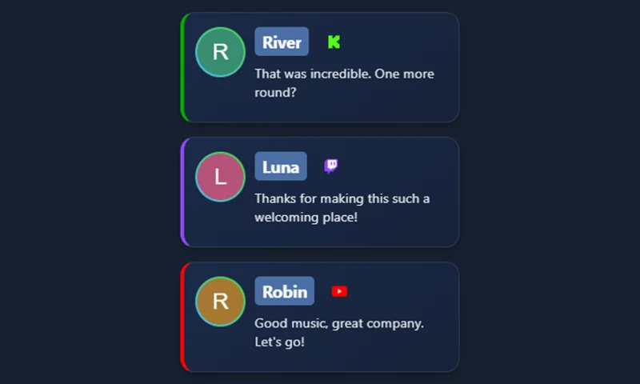
Галерея оверлеев
Просматривайте оверлеи чата, избранных сообщений и оповещений для трансляции.
Добавьте оверлей в свой эфир
Введите идентификатор сеанса Social Stream Ninja, затем выберите Открыть оверлей на карточке. Скопируйте ссылку в источник «Браузер» OBS. Оверлеи выбранных сообщений показывают то, что вы выбрали в док-панели; множественные оповещения показывают входящие события.
ЕДИНЫЙ НАБОР
Добавьте каждую ссылку отдельным источником «Браузер» OBS. Выбранные сообщения поступают из док-панели, а оповещения реагируют на входящие события.
Эти поля остаются на странице и не сохраняются. Для серверного режима, фильтров, автоскрытия и других параметров используйте соответствующую предустановку приложения.
Подходящих оверлеев нет. Измените запрос или выберите все оверлеи.

Объединённый чат
Компактный классический
Плотный чат в стиле Twitch/IRC

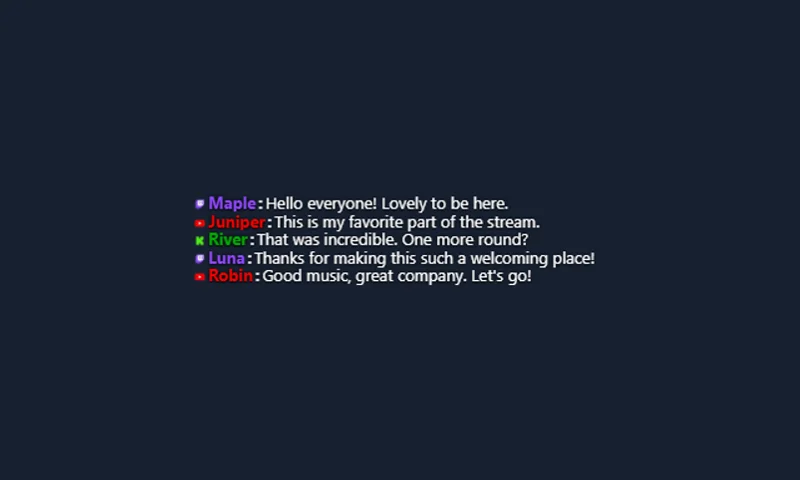
Объединённый чат
Ультракомпактный
Сверхплотный чат минимальной высоты

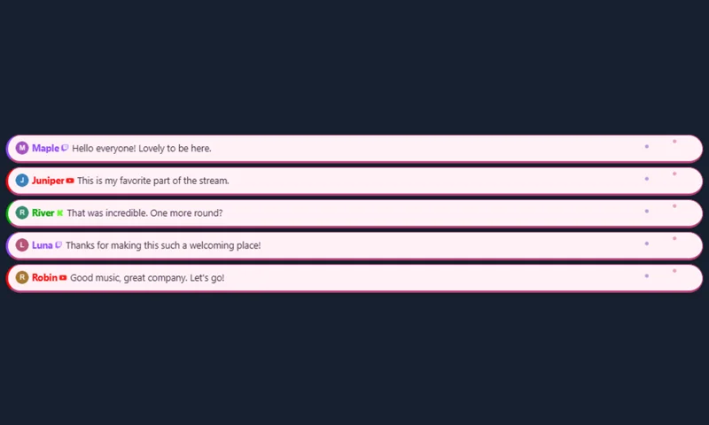
Объединённый чат
Пастельный поп
Нежно-розовый фон с конфетными точками

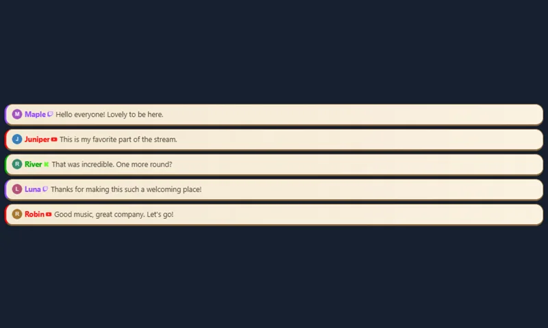

Объединённый чат
Кошачье кафе
Персиковые карточки с маленьким котом

Объединённый чат
Студийные сессии
Тёмная студия с эквалайзером

Объединённый чат
Карманная аркада
Пиксельные рамки и фиолетовые акценты

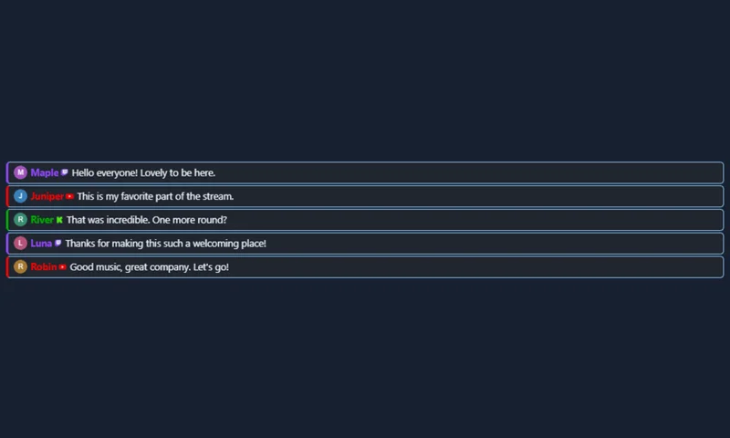

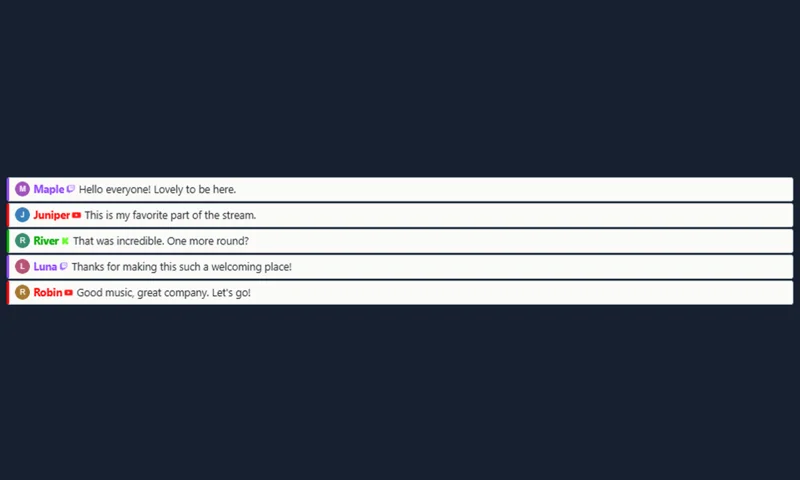

Объединённый чат
Микрострока
Минималистичные узкие тёмные полосы

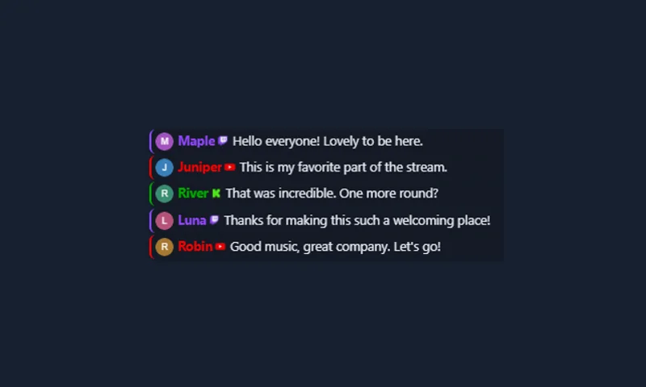
Объединённый чат
Компактный чистый
Аккуратные компактные карточки

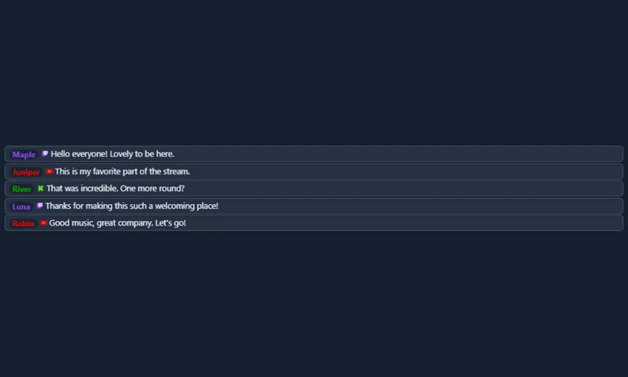
Объединённый чат
Компактное стекло
Компактные строки из матового стекла

Объединённый чат
Док-панель комикс-поп
Чат из складываемых карточек в стиле поп-арт

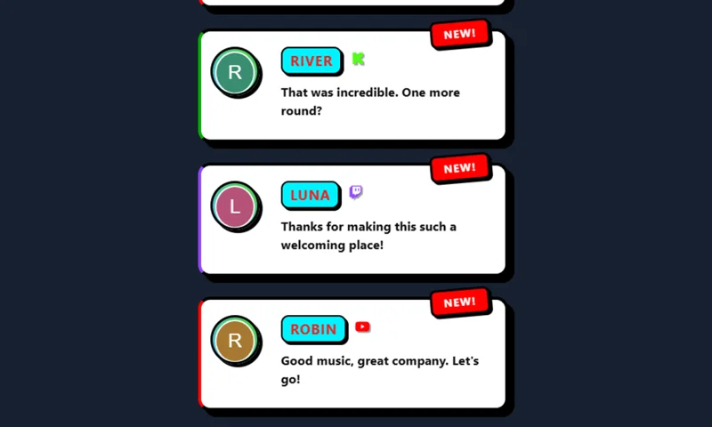
Объединённый чат
Классический комикс-поп
Чат в стиле выбранных сообщений

Объединённый чат
Горизонтальная прокрутка
Бегущая строка справа налево

Объединённый чат
Новостная строка
Бегущая строка срочных новостей


Объединённый чат
Чат-пули Danmaku
Сообщения пролетают через экран

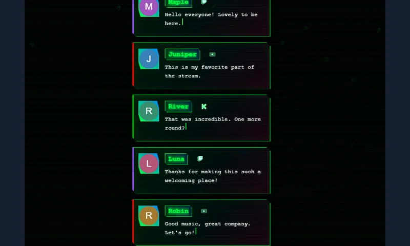
Объединённый чат
Неоновый киберпанк
Футуристические эффекты помех


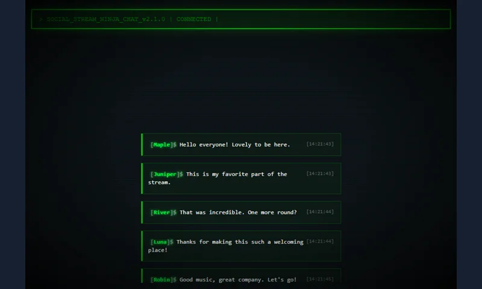
Объединённый чат
Терминальная печатная машинка
Ретроэффекты печати


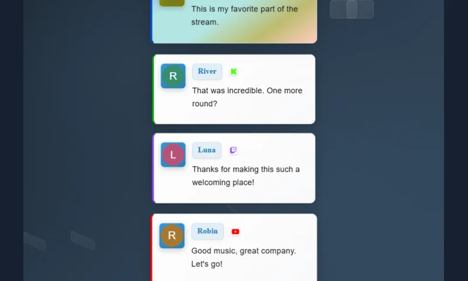
Объединённый чат
Переворот карточки 3D
Интерактивная анимация карточек

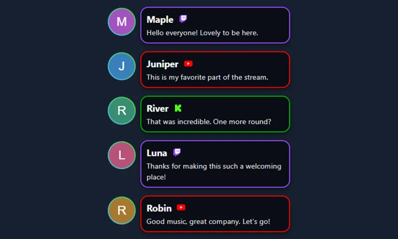
Объединённый чат
Простая альтернатива
Простое сообщение в пузыре


Объединённый чат
Neutron Chat
Игровая научно-фантастическая тема

Объединённый чат
Neutron Stream
Полный макет эфира для источника 1920 × 1080 с панелью чата справа.


Выбранное сообщение
Классический (полная настройка)
Оверлей «Классический (полная настройка)» для одного выбранного сообщения.

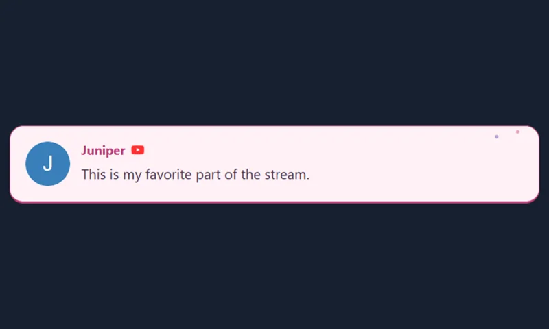
Выбранное сообщение
Пастельный поп
Оверлей «Пастельный поп» для одного выбранного сообщения.

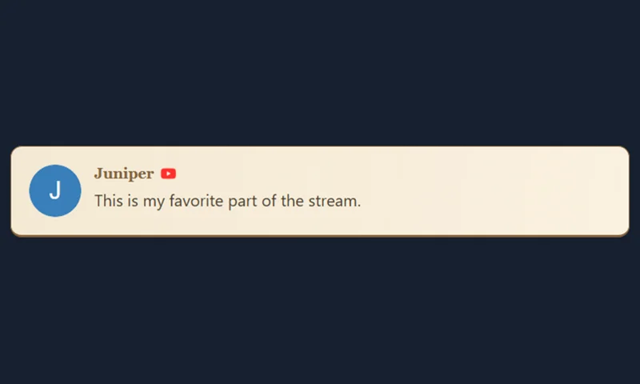
Выбранное сообщение
Уютное кафе
Оверлей «Уютное кафе» для одного выбранного сообщения.

Выбранное сообщение
Кошачье кафе
Оверлей «Кошачье кафе» для одного выбранного сообщения.

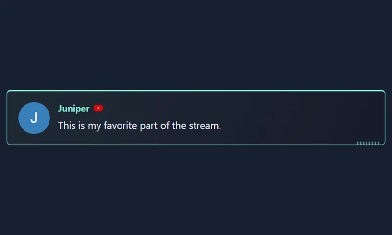
Выбранное сообщение
Студийные сессии
Оверлей «Студийные сессии» для одного выбранного сообщения.

Выбранное сообщение
Карманная аркада
Оверлей «Карманная аркада» для одного выбранного сообщения.

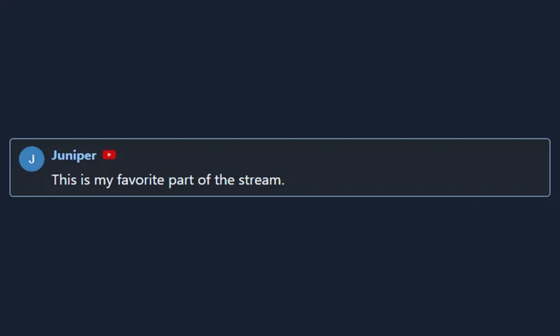
Выбранное сообщение
Компактный сланец
Оверлей «Компактный сланец» для одного выбранного сообщения.

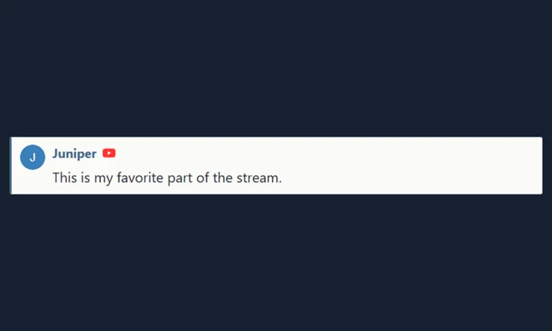
Выбранное сообщение
Компактная бумага
Оверлей «Компактная бумага» для одного выбранного сообщения.

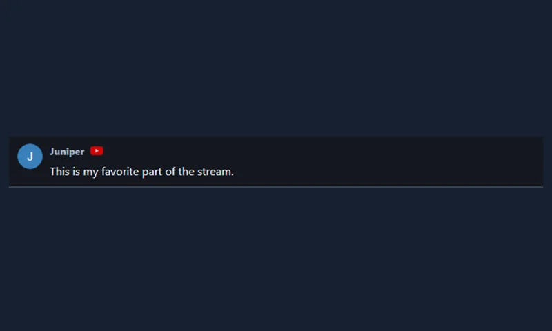
Выбранное сообщение
Микрострока
Оверлей «Микрострока» для одного выбранного сообщения.

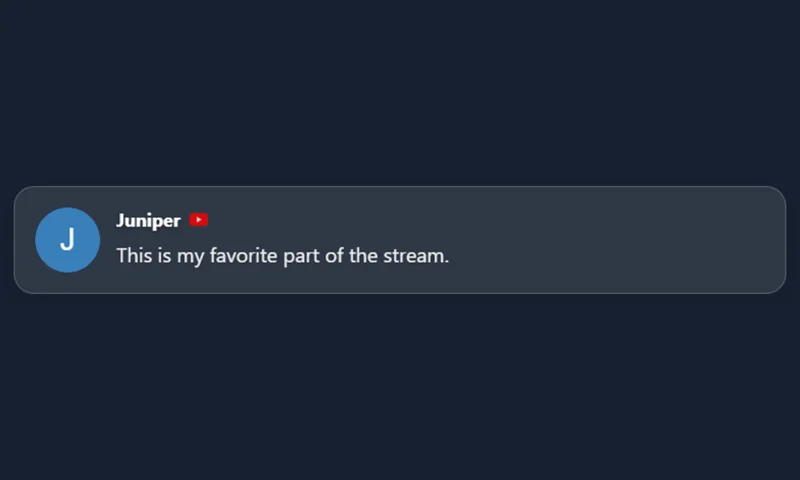
Выбранное сообщение
Современное стекло
Оверлей «Современное стекло» для одного выбранного сообщения.

Выбранное сообщение
Неоновое свечение
Оверлей «Неоновое свечение» для одного выбранного сообщения.

Выбранное сообщение
Чистый минимализм
Оверлей «Чистый минимализм» для одного выбранного сообщения.

Выбранное сообщение
Игровой RGB
Оверлей «Игровой RGB» для одного выбранного сообщения.

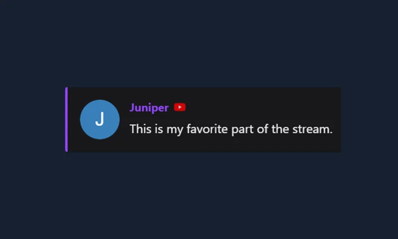
Выбранное сообщение
Стиль Twitch
Оверлей «Стиль Twitch» для одного выбранного сообщения.

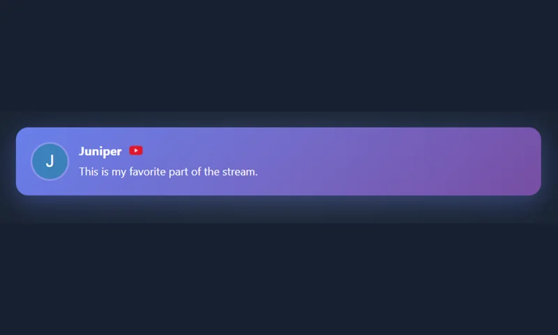
Выбранное сообщение
Анимированный отскок
Оверлей «Анимированный отскок» для одного выбранного сообщения.

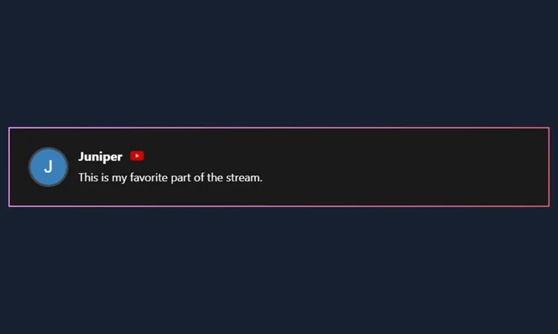
Выбранное сообщение
Анимированное скольжение
Оверлей «Анимированное скольжение» для одного выбранного сообщения.

Выбранное сообщение
Печатная машинка
Оверлей «Печатная машинка» для одного выбранного сообщения.

Выбранное сообщение
Комикс-поп
Оверлей «Комикс-поп» для одного выбранного сообщения.

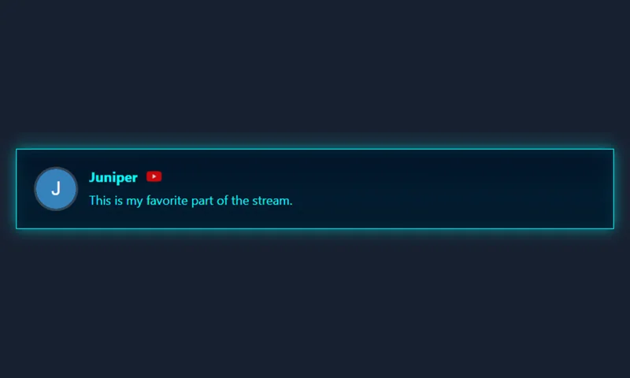
Выбранное сообщение
Голографический
Оверлей «Голографический» для одного выбранного сообщения.

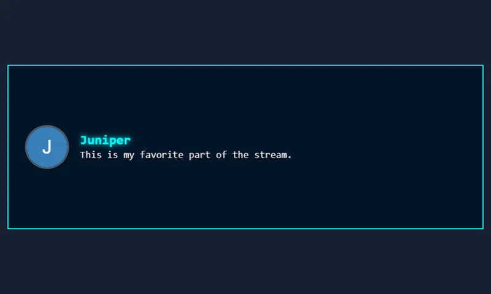
Выбранное сообщение
3D-куб
Оверлей «3D-куб» для одного выбранного сообщения.

Выбранное сообщение
Переворот карточки
Оверлей «Переворот карточки» для одного выбранного сообщения.

Выбранное сообщение
Парящие панели
Оверлей «Парящие панели» для одного выбранного сообщения.

Выбранное сообщение
Винтовая спираль
Оверлей «Винтовая спираль» для одного выбранного сообщения.

Выбранное сообщение
Изометрия
Оверлей «Изометрия» для одного выбранного сообщения.

Выбранное сообщение
Светлячки
Оверлей «Светлячки» для одного выбранного сообщения.

Выбранное сообщение
Снегопад
Оверлей «Снегопад» для одного выбранного сообщения.

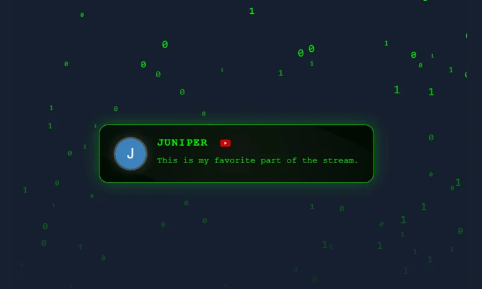
Выбранное сообщение
Матричный дождь
Оверлей «Матричный дождь» для одного выбранного сообщения.

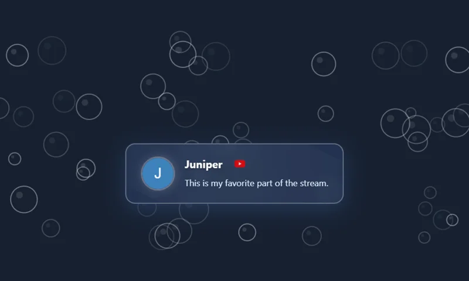
Выбранное сообщение
Пузыри
Оверлей «Пузыри» для одного выбранного сообщения.

Выбранное сообщение
Звёздное поле
Оверлей «Звёздное поле» для одного выбранного сообщения.

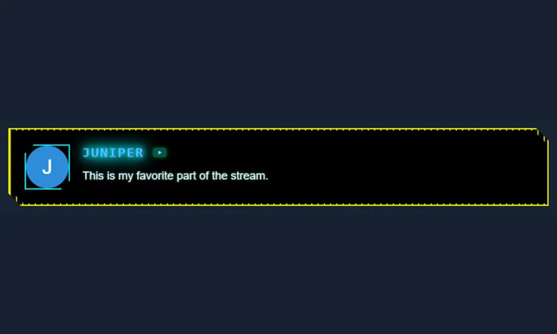
Выбранное сообщение
Киберпанк — схема
Оверлей «Киберпанк — схема» для одного выбранного сообщения.

Выбранное сообщение
Киберпанк — хак
Оверлей «Киберпанк — хак» для одного выбранного сообщения.

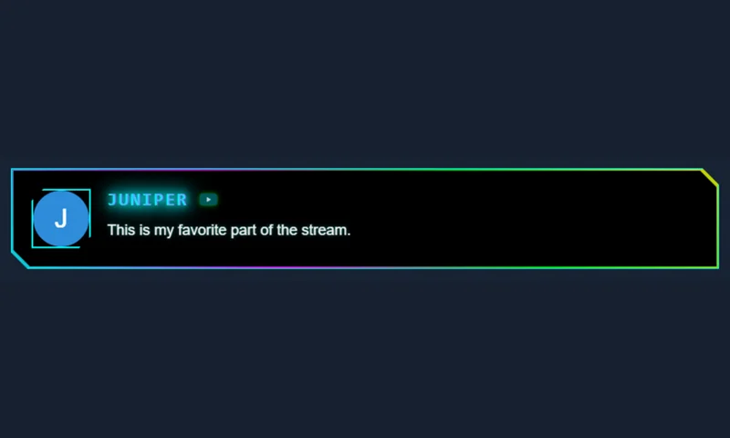
Выбранное сообщение
Киберпанк — голограмма
Оверлей «Киберпанк — голограмма» для одного выбранного сообщения.

Выбранное сообщение
Киберпанк — матрица
Оверлей «Киберпанк — матрица» для одного выбранного сообщения.

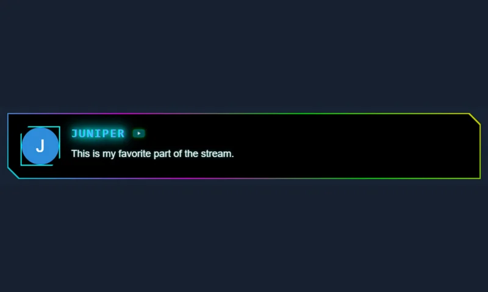
Выбранное сообщение
Киберпанк — нейросеть
Оверлей «Киберпанк — нейросеть» для одного выбранного сообщения.

Выбранное сообщение
Динамика — эластичность
Оверлей «Динамика — эластичность» для одного выбранного сообщения.

Выбранное сообщение
Динамика — гравитация
Оверлей «Динамика — гравитация» для одного выбранного сообщения.

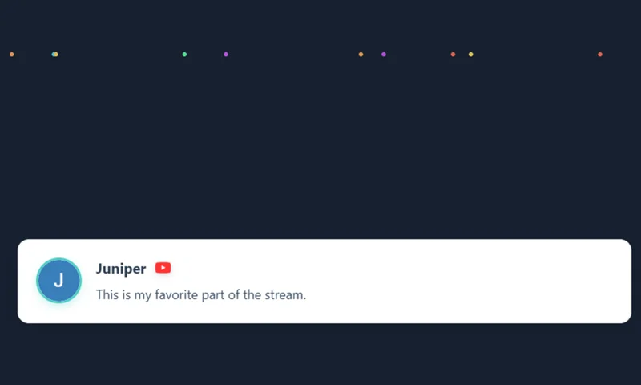
Выбранное сообщение
Динамика — магнетизм
Оверлей «Динамика — магнетизм» для одного выбранного сообщения.

Выбранное сообщение
Динамика — маятник
Оверлей «Динамика — маятник» для одного выбранного сообщения.

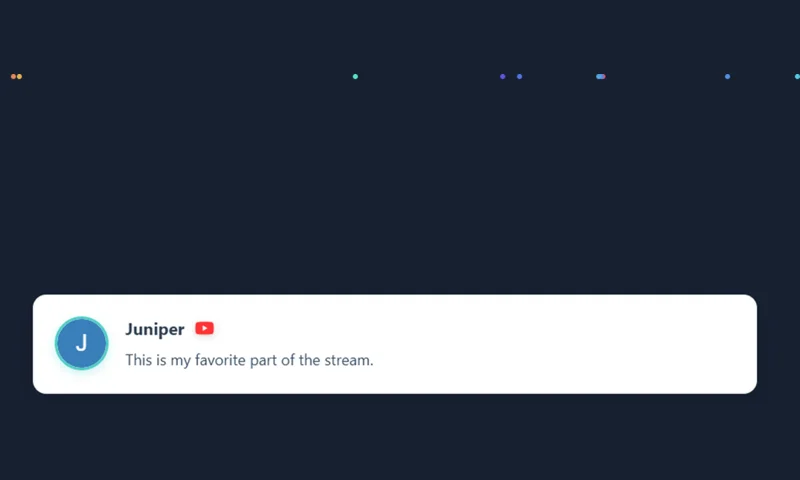
Выбранное сообщение
Динамика — пружина
Оверлей «Динамика — пружина» для одного выбранного сообщения.

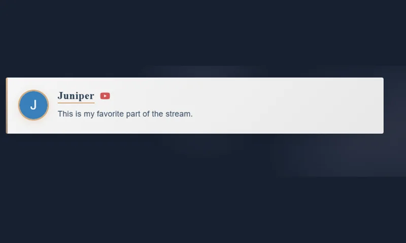
Выбранное сообщение
Элегантность — классика
Оверлей «Элегантность — классика» для одного выбранного сообщения.

Выбранное сообщение
Элегантность — роскошь
Оверлей «Элегантность — роскошь» для одного выбранного сообщения.

Выбранное сообщение
Элегантность — минимализм
Оверлей «Элегантность — минимализм» для одного выбранного сообщения.

Выбранное сообщение
Элегантность — королевский стиль
Оверлей «Элегантность — королевский стиль» для одного выбранного сообщения.

Выбранное сообщение
Элегантность — винтаж
Оверлей «Элегантность — винтаж» для одного выбранного сообщения.

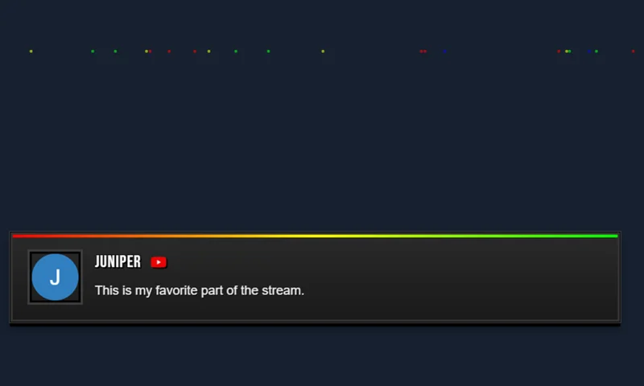
Выбранное сообщение
Игры — аркада
Оверлей «Игры — аркада» для одного выбранного сообщения.

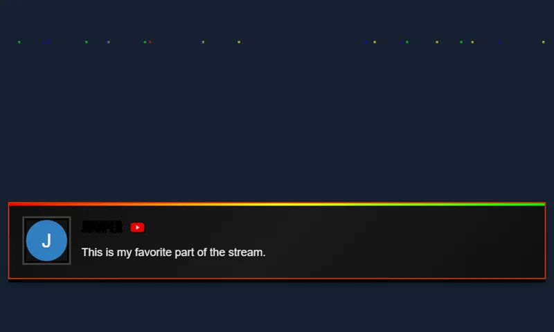
Выбранное сообщение
Игры — киберспорт
Оверлей «Игры — киберспорт» для одного выбранного сообщения.

Выбранное сообщение
Игры — шутер
Оверлей «Игры — шутер» для одного выбранного сообщения.

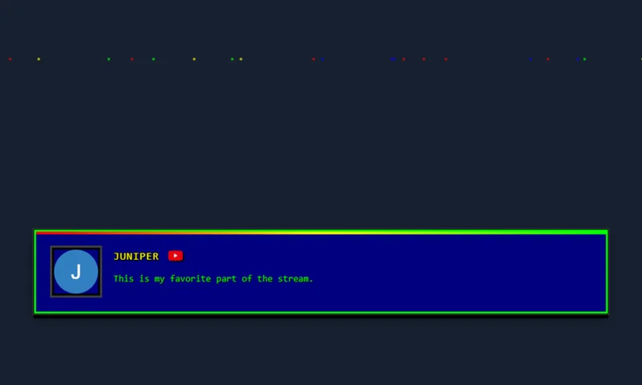
Выбранное сообщение
Игры — ретро
Оверлей «Игры — ретро» для одного выбранного сообщения.

Выбранное сообщение
Игры — RPG
Оверлей «Игры — RPG» для одного выбранного сообщения.

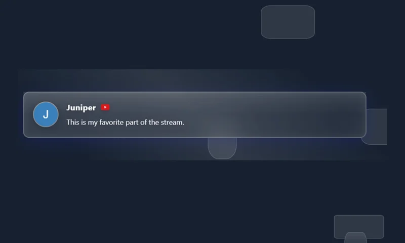
Выбранное сообщение
Стекло — кристалл
Оверлей «Стекло — кристалл» для одного выбранного сообщения.

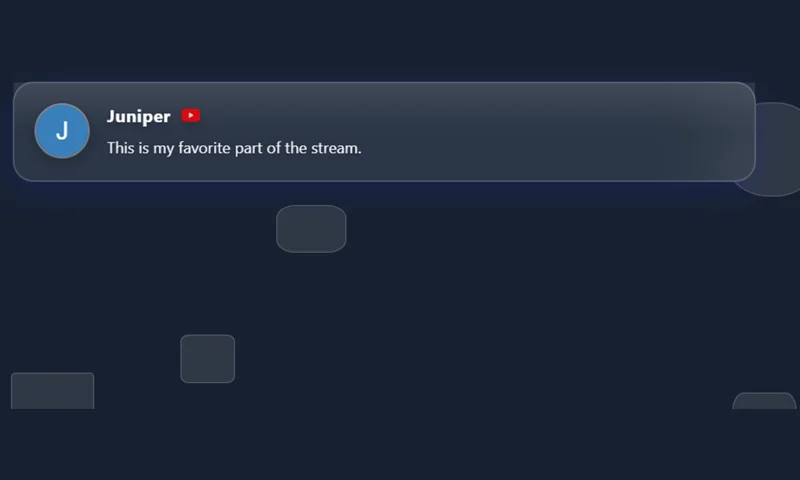
Выбранное сообщение
Стекло — матовое
Оверлей «Стекло — матовое» для одного выбранного сообщения.

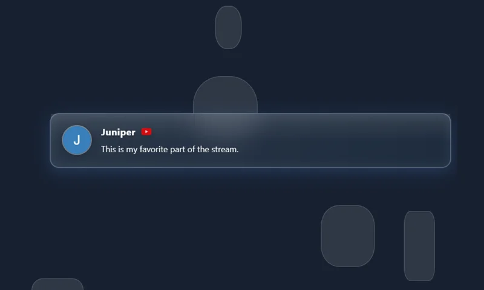
Выбранное сообщение
Стекло — лёд
Оверлей «Стекло — лёд» для одного выбранного сообщения.

Выбранное сообщение
Стекло — зеркало
Оверлей «Стекло — зеркало» для одного выбранного сообщения.

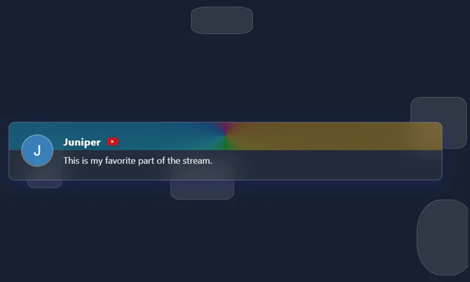
Выбранное сообщение
Стекло — призма
Оверлей «Стекло — призма» для одного выбранного сообщения.

Выбранное сообщение
Градиент — сияние
Оверлей «Градиент — сияние» для одного выбранного сообщения.

Выбранное сообщение
Градиент — космос
Оверлей «Градиент — космос» для одного выбранного сообщения.

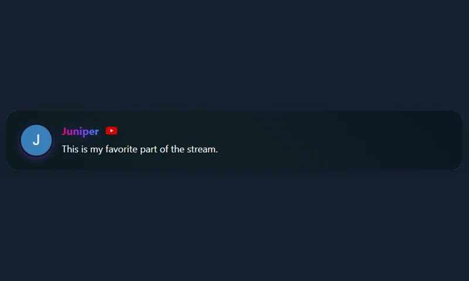
Выбранное сообщение
Градиент — океан
Оверлей «Градиент — океан» для одного выбранного сообщения.

Выбранное сообщение
Градиент — радуга
Оверлей «Градиент — радуга» для одного выбранного сообщения.

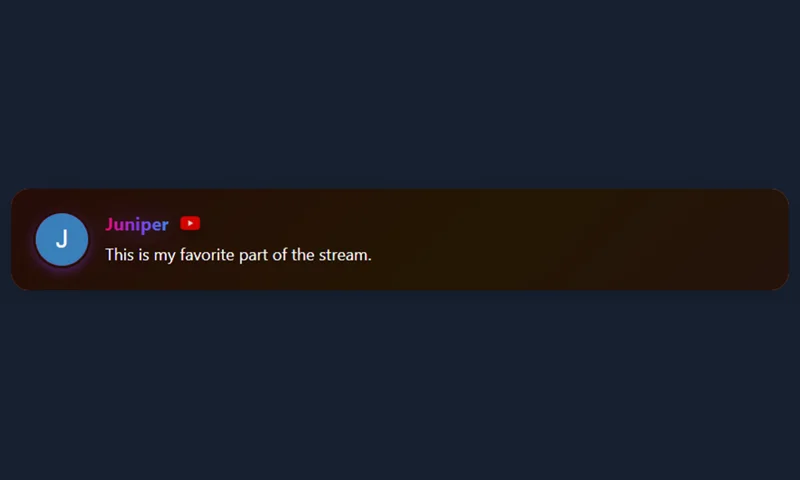
Выбранное сообщение
Градиент — закат
Оверлей «Градиент — закат» для одного выбранного сообщения.

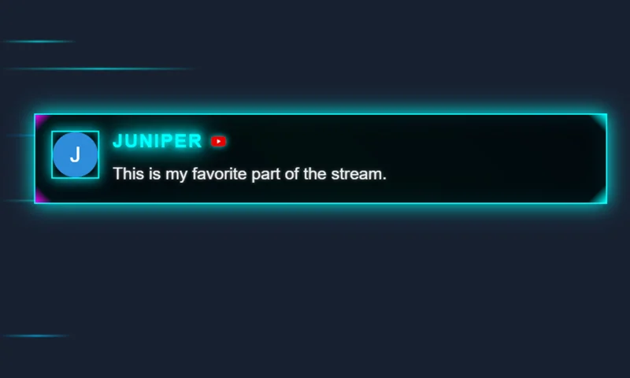
Выбранное сообщение
Неон — электричество
Оверлей «Неон — электричество» для одного выбранного сообщения.

Выбранное сообщение
Неон — ярко-розовый
Оверлей «Неон — ярко-розовый» для одного выбранного сообщения.

Выбранное сообщение
Неон — закат
Оверлей «Неон — закат» для одного выбранного сообщения.

Выбранное сообщение
Неон — токсичный
Оверлей «Неон — токсичный» для одного выбранного сообщения.

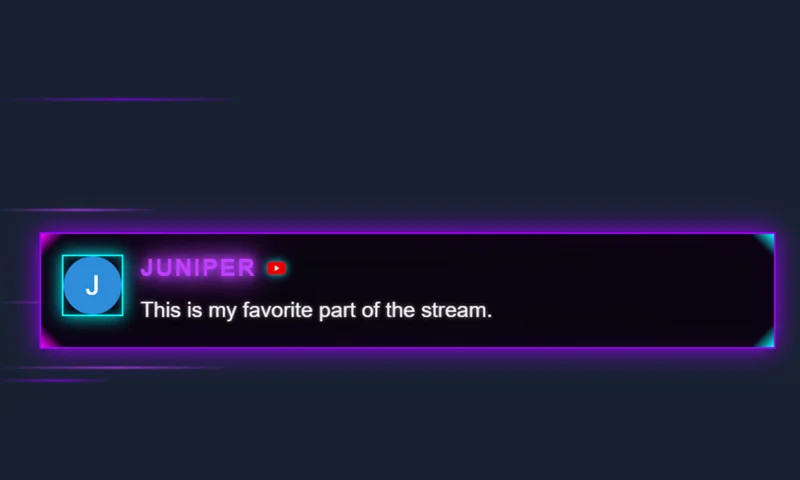
Выбранное сообщение
Неон — ультрафиолет
Оверлей «Неон — ультрафиолет» для одного выбранного сообщения.

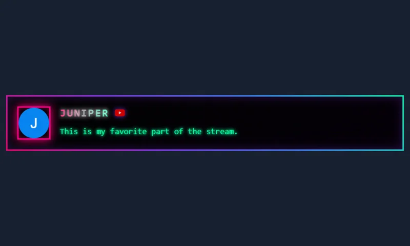
Выбранное сообщение
Ретро — аркада
Оверлей «Ретро — аркада» для одного выбранного сообщения.

Выбранное сообщение
Ретро — лазер
Оверлей «Ретро — лазер» для одного выбранного сообщения.

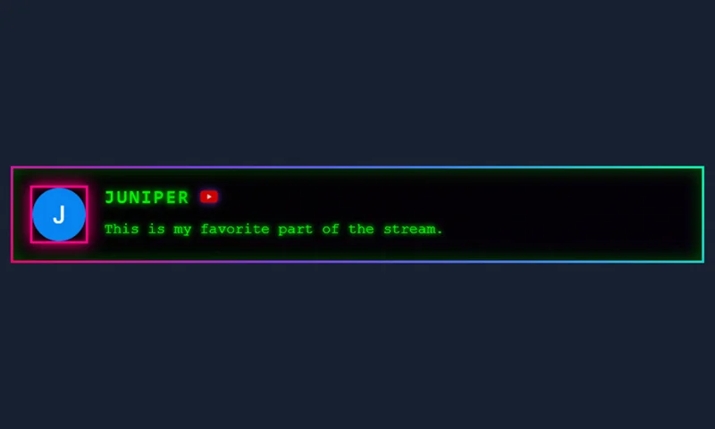
Выбранное сообщение
Ретро — матрица
Оверлей «Ретро — матрица» для одного выбранного сообщения.

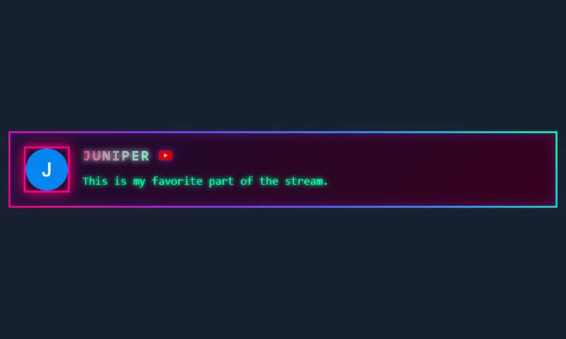
Выбранное сообщение
Ретро — неоновый город
Оверлей «Ретро — неоновый город» для одного выбранного сообщения.

Выбранное сообщение
Ретро — VHS
Оверлей «Ретро — VHS» для одного выбранного сообщения.

Выбранное сообщение
Скольжение — снизу
Оверлей «Скольжение — снизу» для одного выбранного сообщения.

Выбранное сообщение
Скольжение — по диагонали
Оверлей «Скольжение — по диагонали» для одного выбранного сообщения.

Выбранное сообщение
Скольжение — слева
Оверлей «Скольжение — слева» для одного выбранного сообщения.

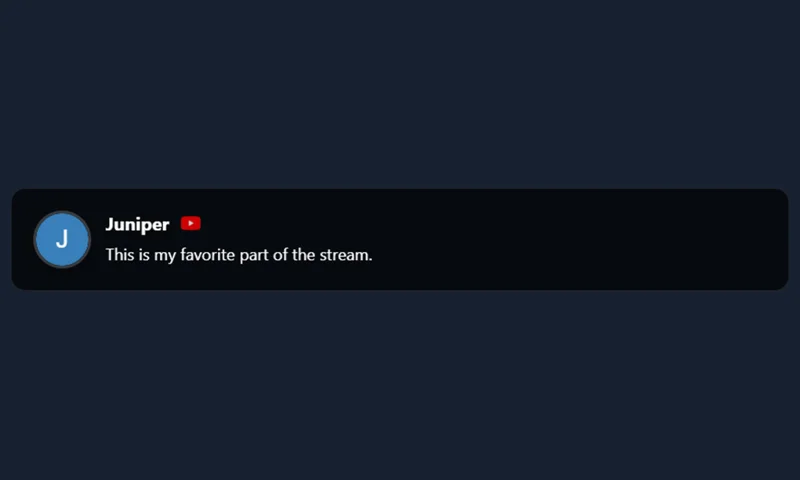
Выбранное сообщение
Скольжение — справа
Оверлей «Скольжение — справа» для одного выбранного сообщения.

Выбранное сообщение
Скольжение — сверху
Оверлей «Скольжение — сверху» для одного выбранного сообщения.

Объединённый чат
Huan Kiara
Оверлей Huan Kiara для объединённого чата прямого эфира.

Объединённый чат
Постоянный чат в красном неоне
Оверлей постоянного чата в красном неоне для объединённого чата прямого эфира.

Объединённый чат
Spiritveil
Оверлей Spiritveil для объединённого чата прямого эфира.

Объединённый чат
Обратный пример чата
Оверлей обратного примера для объединённого чата прямого эфира.

Множественные оповещения и события
Панель событий
Оверлей панели событий для событий трансляции.

Объединённый чат
Основной чат
Настраиваемый основной оверлей чата без элементов управления.

Выбранное сообщение
Пример выбранного сообщения
Простой шаблон выбранного сообщения.

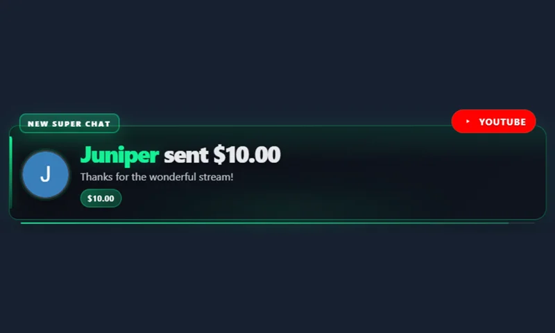
Множественные оповещения и события
Twitch
Оповещения о новых подписчиках, платных подписках, пожертвованиях, Bits, рейдах, аукционах и Hype Train в одном стиле.

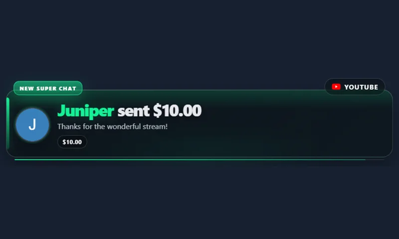
Множественные оповещения и события
Классический
Оповещения о новых подписчиках, платных подписках, пожертвованиях, Bits, рейдах, аукционах и Hype Train в одном стиле.

Множественные оповещения и события
Минималистичный стиль
Оповещения о новых подписчиках, платных подписках, пожертвованиях, Bits, рейдах, аукционах и Hype Train в одном стиле.

Множественные оповещения и события
Сплошной / плоский
Оповещения о новых подписчиках, платных подписках, пожертвованиях, Bits, рейдах, аукционах и Hype Train в одном стиле.

Множественные оповещения и события
Пастельный поп
Оповещения о новых подписчиках, платных подписках, пожертвованиях, Bits, рейдах, аукционах и Hype Train в одном стиле.

Множественные оповещения и события
Уютное кафе
Оповещения о новых подписчиках, платных подписках, пожертвованиях, Bits, рейдах, аукционах и Hype Train в одном стиле.

Множественные оповещения и события
Кошачье кафе
Оповещения о новых подписчиках, платных подписках, пожертвованиях, Bits, рейдах, аукционах и Hype Train в одном стиле.

Множественные оповещения и события
Студийные сессии
Оповещения о новых подписчиках, платных подписках, пожертвованиях, Bits, рейдах, аукционах и Hype Train в одном стиле.

Множественные оповещения и события
Карманная аркада
Оповещения о новых подписчиках, платных подписках, пожертвованиях, Bits, рейдах, аукционах и Hype Train в одном стиле.

Множественные оповещения и события
Компактный сланец
Оповещения о новых подписчиках, платных подписках, пожертвованиях, Bits, рейдах, аукционах и Hype Train в одном стиле.

Множественные оповещения и события
Компактная бумага
Оповещения о новых подписчиках, платных подписках, пожертвованиях, Bits, рейдах, аукционах и Hype Train в одном стиле.

Множественные оповещения и события
Микрострока
Оповещения о новых подписчиках, платных подписках, пожертвованиях, Bits, рейдах, аукционах и Hype Train в одном стиле.

Выбранное сообщение
Клубничный кот
Сонная трёхцветная кошка, клубничное молоко и нежно-розовая канцелярия

Выбранное сообщение
Хорошая компания
Весёлый корги на небесно-голубой открытке

Выбранное сообщение
Тыквенное привидение
Дружелюбное привидение, светящаяся тыква и ночные сливовые тона

Выбранное сообщение
Весёлый оленёнок
Олень в шарфе и праздничная хвоя

Выбранное сообщение
Полуночный микстейп
Енот в наушниках и винил в мятных и сливовых тонах

Выбранное сообщение
Мох и грибы
Сказочная лягушка в тихом лесу

Выбранное сообщение
Лунный зайчик
Зайчик-космонавт среди сиреневой звёздной пыли

Выбранное сообщение
Хранитель кристалла
Маленький дракон со светящимся волшебным кристаллом

Объединённый чат
Чат «Клубничный кот»
Карточки чата в одном стиле с маленьким нарисованным спутником

Множественные оповещения и события
Оповещения «Клубничный кот»
Иллюстрированные оповещения о новых подписчиках, пожертвованиях и платных подписках в одном стиле

Объединённый чат
Чат «Хорошая компания»
Карточки чата в одном стиле с маленьким нарисованным спутником

Множественные оповещения и события
Оповещения «Хорошая компания»
Иллюстрированные оповещения о новых подписчиках, пожертвованиях и платных подписках в одном стиле

Объединённый чат
Чат «Тыквенное привидение»
Карточки чата в одном стиле с маленьким нарисованным спутником

Множественные оповещения и события
Оповещения «Тыквенное привидение»
Иллюстрированные оповещения о новых подписчиках, пожертвованиях и платных подписках в одном стиле

Объединённый чат
Чат «Весёлый оленёнок»
Карточки чата в одном стиле с маленьким нарисованным спутником

Множественные оповещения и события
Оповещения «Весёлый оленёнок»
Иллюстрированные оповещения о новых подписчиках, пожертвованиях и платных подписках в одном стиле

Объединённый чат
Чат «Полуночный микстейп»
Карточки чата в одном стиле с маленьким нарисованным спутником

Множественные оповещения и события
Оповещения «Полуночный микстейп»
Иллюстрированные оповещения о новых подписчиках, пожертвованиях и платных подписках в одном стиле

Объединённый чат
Чат «Мох и грибы»
Карточки чата в одном стиле с маленьким нарисованным спутником

Множественные оповещения и события
Оповещения «Мох и грибы»
Иллюстрированные оповещения о новых подписчиках, пожертвованиях и платных подписках в одном стиле

Объединённый чат
Чат «Лунный зайчик»
Карточки чата в одном стиле с маленьким нарисованным спутником

Множественные оповещения и события
Оповещения «Лунный зайчик»
Иллюстрированные оповещения о новых подписчиках, пожертвованиях и платных подписках в одном стиле

Объединённый чат
Чат «Хранитель кристалла»
Карточки чата в одном стиле с маленьким нарисованным спутником

Множественные оповещения и события
Оповещения «Хранитель кристалла»
Иллюстрированные оповещения о новых подписчиках, пожертвованиях и платных подписках в одном стиле
На снимках показаны вымышленные сообщения. Анимированные стили сняты в один момент; фон предпросмотра не входит в прозрачный оверлей.